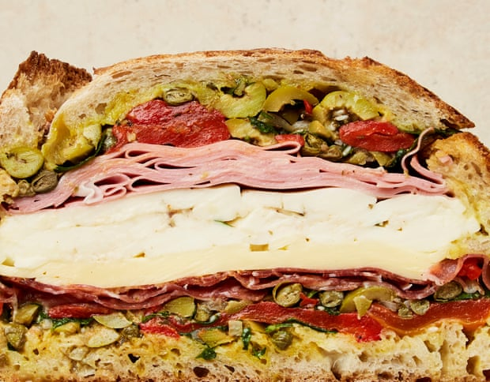

Muffuletta

Go big or go home with this, my version of the epic New Orleans sandwich. If you’re eating it at home (ie, close to an oven) skip the initial toasting stage and instead put the filled loaf in the oven for a perfectly melting sandwich.
Heat the oven to 240C (220C fan)/475F/gas 9. Cut off the top third of the loaf lengthways: this will be the lid later. Using your hands, carefully hollow out the loaf, removing as much of the crumb as possible (save it to make breadcrumbs), while leaving the crust intact. Put the hollowed-out loaf and its lid separately on an oven tray, bake for three to five minutes, until crisp and lightly golden on the inside, then remove and set aside.
Meanwhile, make the salsa. Put 50ml oil in a small saucepan on a medium heat and, once hot, add the garlic and cook, stirring often, for three minutes, until softened. Stir in the za’atar and anchovies, then take off the heat. Pour the za’atar mix into a medium bowl, leave to cool, then stir in the chilli, shallots, olives, peppers, capers, parsley, basil, a good grind of pepper and a quarter-teaspoon of salt.
Put the mustard and honey in a small bowl with the remaining three tablespoons of oil, and mix until very smooth. Using a pastry brush, spread the mustard mixture evenly over the inside of the loaf and on the underside of the lid.
To assemble the muffuletta, spoon two-thirds of the olive salsa into the base of the loaf, and spread it out evenly. Layer the salami on top, followed in turn by the gouda, mozzarella and mortadella, firmly pressing in each new layer as you go. Spoon over the remaining salsa and put the lid on top.
Wrap the loaf tightly (in reusable kitchen wrap, ideally) and put it on a tray. Weigh it down with a heavy wooden board (or a tray filled with tins) and leave at room temperature for two to three hours (or refrigerate overnight).
Cut the loaf into thick slices and serve at room temperature.